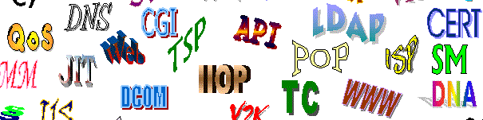

«Странные» буквы

В современном русском языке не склоняются:
-
инициальные аббревиатуры (составленные из первых букв слов),
кончающиеся гласным, например:
МГУ,
ОАО;
-
заимствованные аббревиатуры, кончающиеся
твердым согласным, например:
MAN;
☺ www.itmathrepetitor.ru ☻
Задание